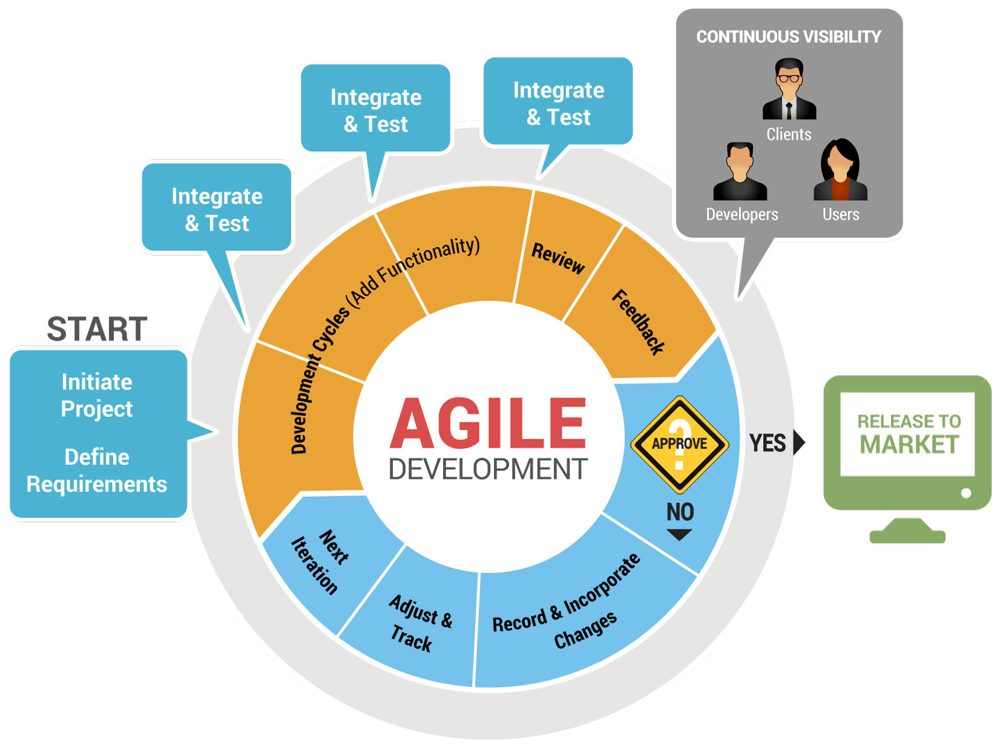
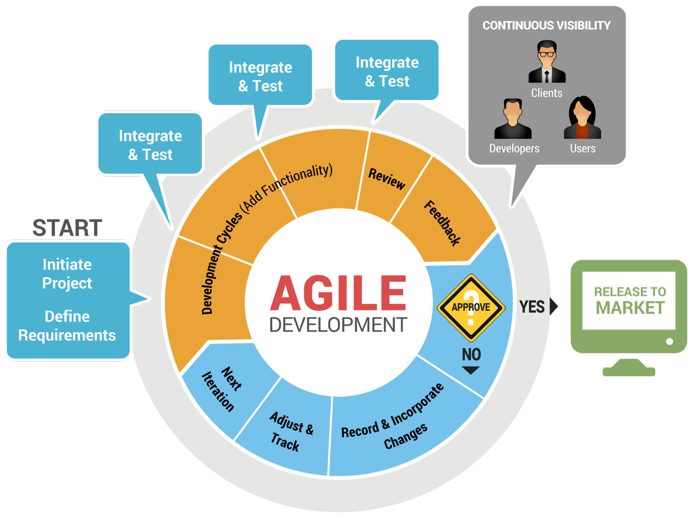
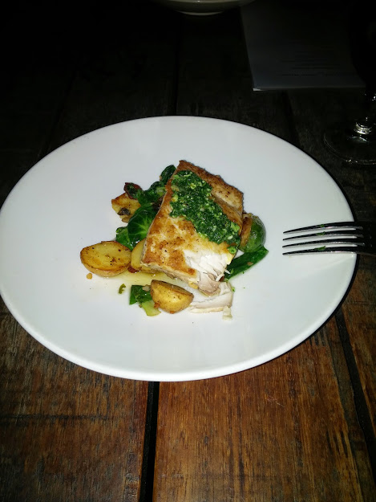
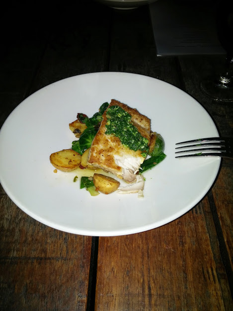

Agenda
- What is Agile?
- What We've Learned at the STP Conference
- What is currently going on at OTPP
- What we could be doing in the future
- Questions?
- ...
What is Agile?
 

What did we learn at STP 2015?

What is going on @OTPP?

The Agile Projects


Agile Boards

Daily Standups!

Fun Stuff
San Diego!

 
